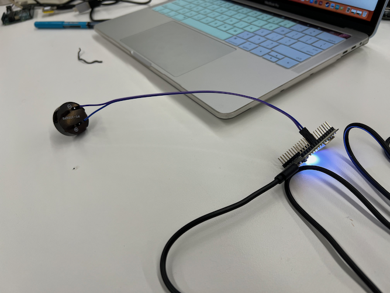
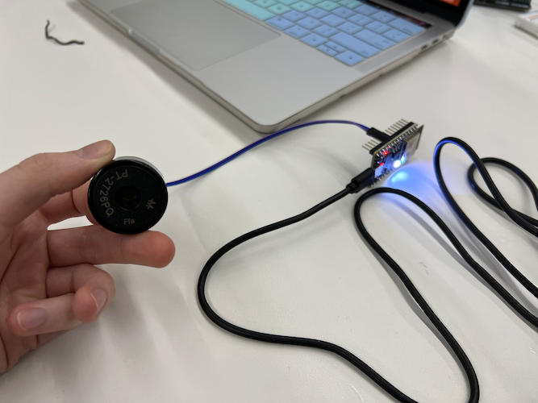
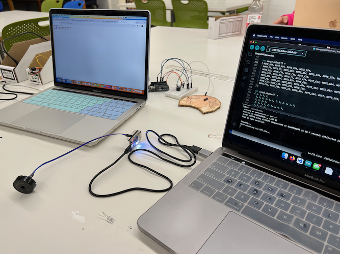
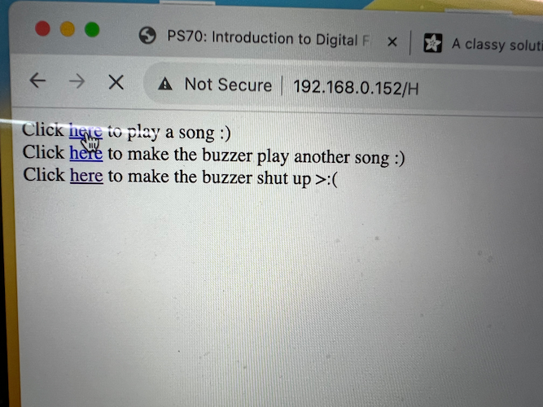
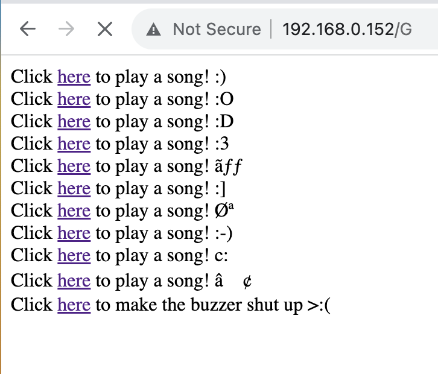

<div class="textcontainer">
<p class="margin"> </p>
<h3>Week 9: Radio, WiFi, Bluetooth (IoT)</h3>
<p class="margin"> </p>
<div class="flexrow">
<a id="btn" href="wk9.zip" download>Download my files from this week!
</a>
</div>
<p class="margin"> </p>
<h4>Assignment: Program a Microcontroller</h4>
This week, I worked with Adelaide to program a mincrocontroller over the internet
using a local LAN website. Our idea was to have a web interface where you could
tell the microcontroller to play a variety of songs on a connected piezo buzzer.
Adelaide was becoming an expert at using piezo buzzers with Arduino, because that
was an important part of her final project, and I focused more on the WiFi logistics.
Our first task was to set up a basic circuit with an Arduino ESP32 going to
a piezoelectric buzzer; we just connected the buzzer to ground and to an Arduino pin
that works for digital output.
<p class="margin"> </p>
<div class="flexrow">


</div>
<p class="caption">The buzzer circuit setup.</p>
For the code, we started off with the Arduino example sketch for a simple WiFi
server to make sure things were working. Instead of translating songs into
frequencies ourselves, we decided to go online and see what songs we could find
already adapted for Arduino. We found a version of the theme from <em>Game of Thrones</em>,
so we combined that code into the Wifi sketch and added a button on the website
to play it. To test our work, we connected the buzzer circuit to my computer with the
Arduino code and accessed the LAN website from Adelaide's computer.
<p class="margin"> </p>
<div class="flexrow">

</div>
<p class="caption">The buzzer circuit connected to my computer while Adelaide's computer talks to the LAN website.</p>
We wanted to add another song for the buzzer to play, but we wanted to have some
fun with it, so we found another sketch online that had transcribed "Never Gonna
Give You Up" by Rick Astley and integrated that into our code. This was a little bit
tricky, because the two songs were written with different logic, but we managed to
reverse-engineer the code and slot in the necessary portions while avoiding unnecessary
repetition.
As you can see from the photo of the interface below, we tried to add a button
to make the buzzer stop playing music, but between the loop code for the WiFi
server and the loop code to play the music, we couldn't get it to work, so we
scrapped that idea.
<p class="margin"> </p>
<div class="flexrow">

</div>
<p class="caption">The initial interface, with buttons for the two songs and a (broken) 'stop' button.</p>
Once this was working, we decided to make it a little funnier by duplicating our
"play a song" buttons so that it would look like the Arduino could play a bunch of
different songs, but actually every button (save one) would be a Rickroll. We also
added emoticons to each line, just for fun. I had a great time working with Adelaide
on this project, and I think we did a good job of complementing each other's strengths!
<p class="margin"> </p>
<div class="flexrow">

</div>
<p class="caption">The final interface, with a whole bunch of buttons that (mostly) are just Rickrolls. Which one do you think is the <em>Game of Thrones</em> theme?</p>
</div>